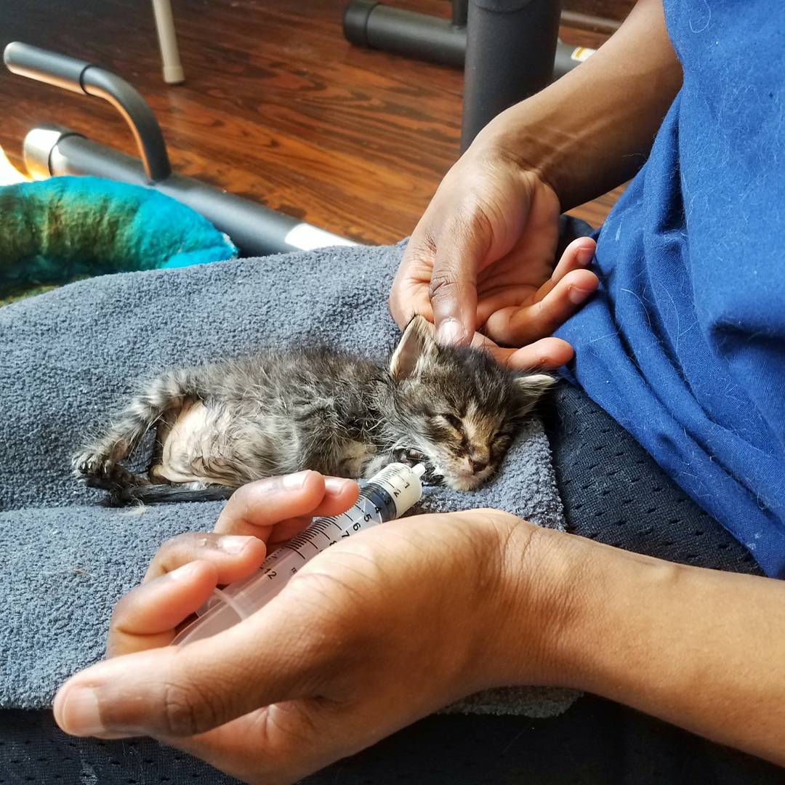
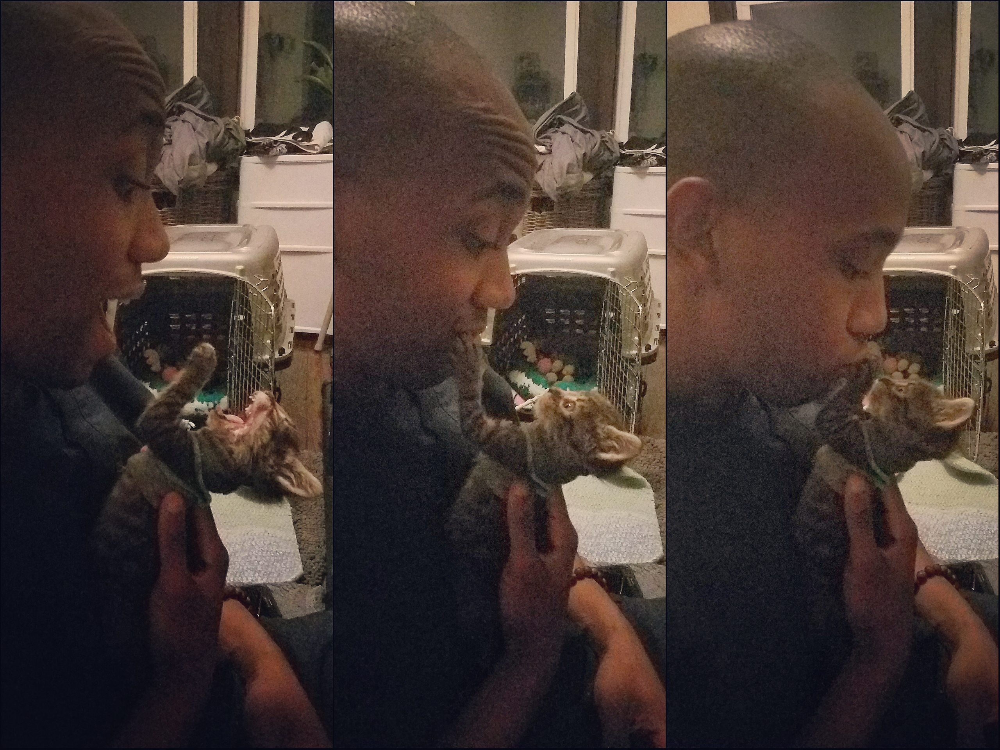
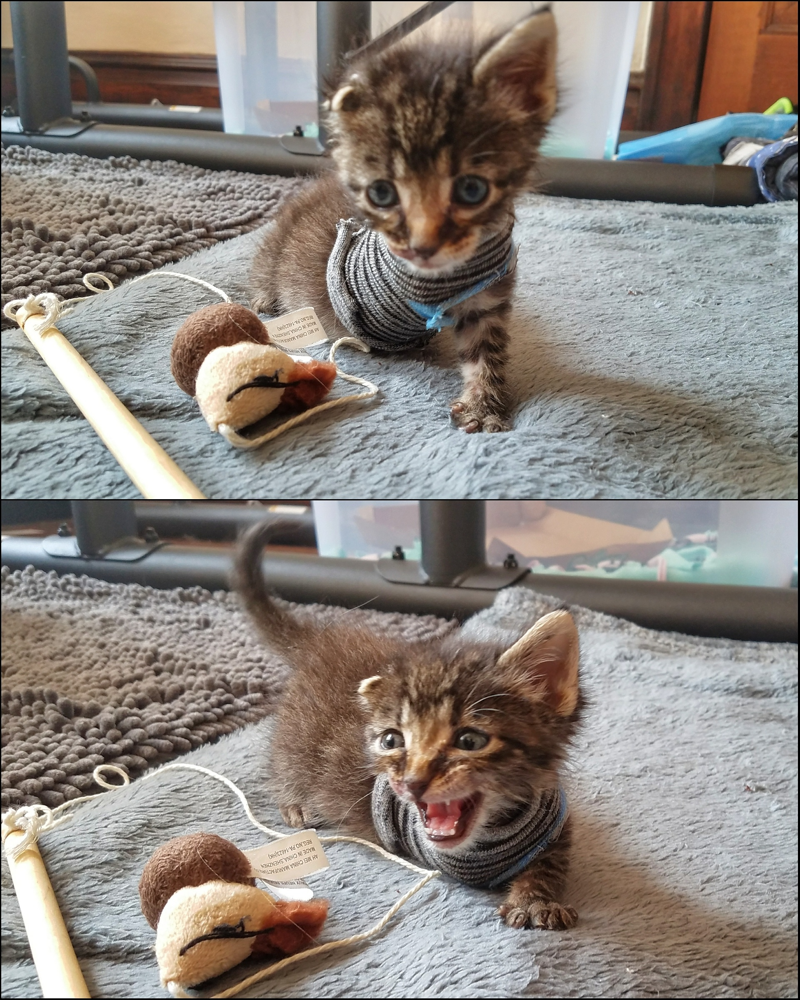
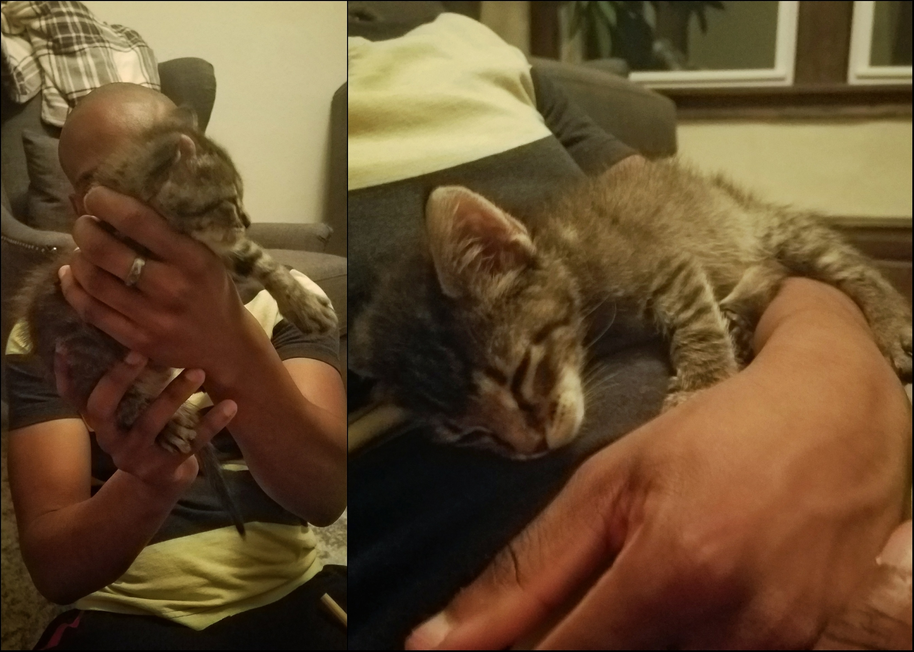
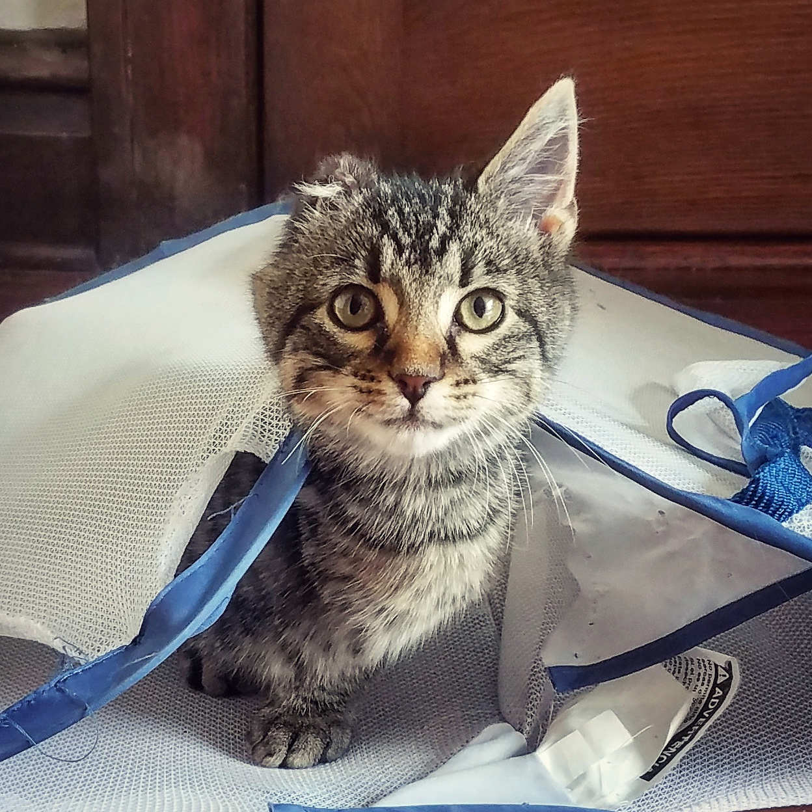
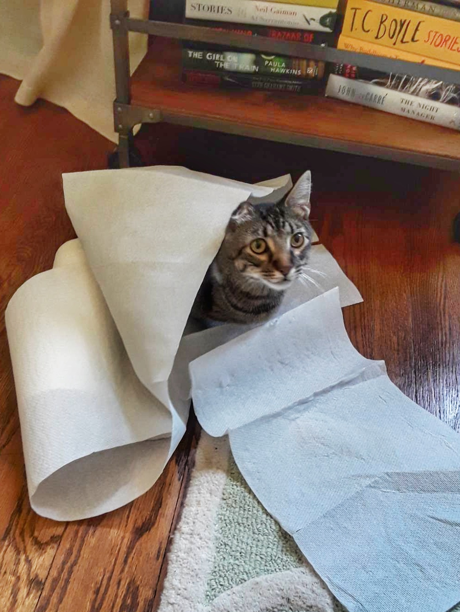
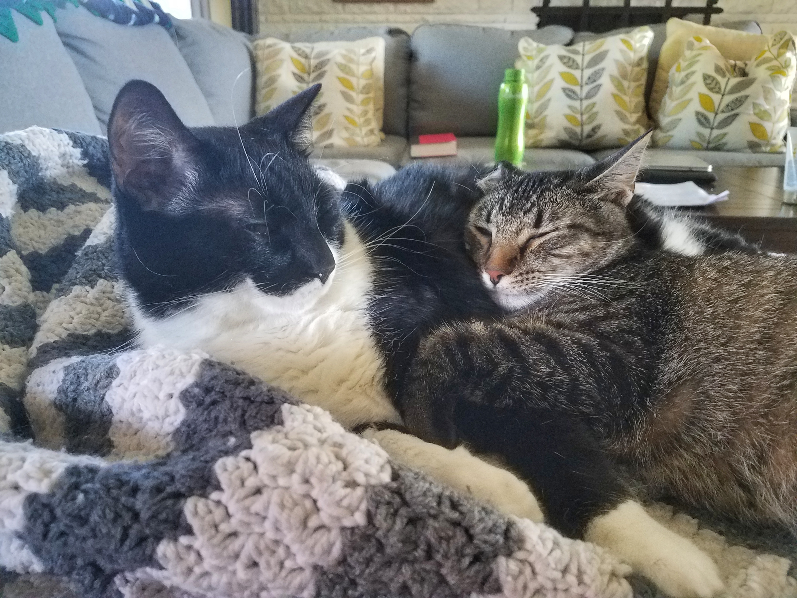
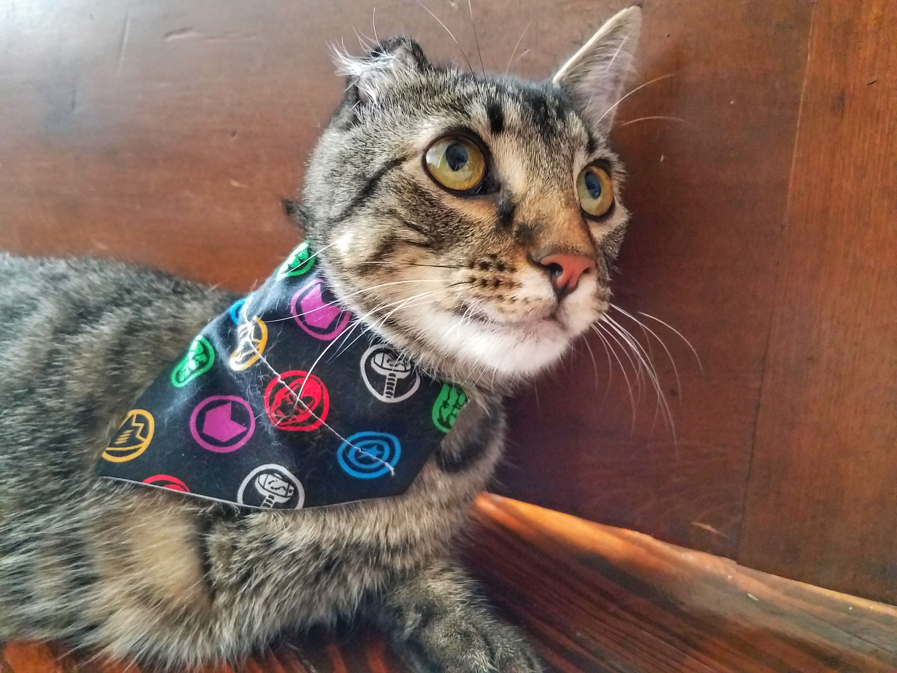

Bucky Barnes: Winter Soldier
Early Days

Feeding Bucky kitten forumla through a syringe.
Bucky came into my life while I was working at St. Louis Cat Clinic in 2017. I was working full time at Trader Joe’s and going into my final semester at University of Missouri St. Louis. “Kitten season”, as we called it, started in early spring and didn’t end until early fall. During ‘kitten season” clients and residents from all over the St. Louis area would call us to ask if we had room to house kittens they, or someone they knew, had found. Typically all of the litters that we received appeared to be abandoned and weren’t old enough to feed themselves. I personally bottle raised my first litter of kittens just a year prior, but decided against doing it again until I had a little bit more free time.
On the first day of classes I worked an opening shift at the Cat Clinic. We received a call just a few hours before I had to leave for class that a client had found a litter of five kittens in their friend’s backyard. All of the employees at the Cat Clinic absolutely adore kittens, but the hardest part about accepting a new litter is that depending on how young they are, they have to be fed every 2-4 hours. Thankfully the Cat Clinic was only a 7 minute drive from my house, but it was still going to be a really big commitment. Of course I couldn’t volunteer quick enough.
The litter arrived just before I left for class, but I agreed that I would come back on my way home from class to feed them and again in the morning before my morning shift at Trader Joe’s. Of the five kittens only one of them was female, and they were adorable. Three of the males were already so healthy and maturing very quickly. Whenever it was feeding time, they would drink all of the formula from the syringe/bottle and want more shortly after. The remaining two kittens were very malnourished and had more trouble eating the recommended amount. Since the two smaller kittens required more attention I decided to take them home with me to give them more attention.
Hail Hydra!

Playing with Bucky shortly after his surgery.
I grew attached to Bucky, who was at the time called “Snickers”, because I could tell that he needed the most medical attention. Whenever the litter would huddle for warmth, he would crawl off by himself and sleep alone which is never a good sign. Even though he was the smallest, Bucky put up the biggest fight when it was time to be fed. Naturally when kittens are young their mother will lick their back end parts which causes them to urinate and defecate, and to mask the smell from predators she will eat the feces. Since the kittens were so small I would also have to stimulate them between feedings, which Bucky hated most. Over a short period of time, Bucky’s sister began to greatly improve so she went to join her brothers.

After Bucky's amputation, I put baby socks on him to reduce exposure to the surgery site. Adorable.
At a little over a month of age Bucky threw a blood clot, which would result in his right arm and ear slowly deteriorating until they fell off. His ear fell off on it’s own, but his arm had to be surgically removed before he was even a full pound. At the time we already had two cats, but there was no way I was going to let Bucky go to another home. I wasn’t successfully able to rename him until after his amputation when the name "Bucky Barnes"came to mind. I got the name from a Marvel character who was originally Captain America’s sidekick. Bucky Barnes was thought to have died during a mission, but returned years later as a brainwashed assassin with a metal arm. I couldn’t pass up the opportunity, especially since my Bucky has the personality of an old Vietnam War veteran.

Bucky taking a nap on my belly after his dinner.
Becoming A Hero

Bucky turning my old clothes basket into a hiding spot.
After his amputation, his physical development increased dramatically. Bucky was so young when he underwent his amputation, so having 3 legs is all that he has ever really known. Of the three cats that I have Bucky has definitely become the healthiest but since he spent the socializing period of his development separated from other cats, he never really learned how to interact like a mentally matured cat. Although he will frequently rampage through the house, he still nurses on my shirt and blanket at bed time until he falls asleep just as he did when he was a tiny nugget. Bucky is three years old now and currently weighs 7lbs, so I guess he is just a slightly older tiny nugget.

We tried taping a roll of paper towels to the window sill to prevent Bucky from eating the houseplants. This was the result.
Bucky has turned out to be an amazing cat. Despite his size, he always runs towards danger and uncertainty and never backs down from a fight.
Please enjoy more adorable pictures of him through the years!

Bucky taking a nap with one of his older brothers, Diego.

Bucky was starting a lot of fights between the cats so I tried putting a bandana, with 'calming pheromones', on him. He was furious.
Bucky Today

A picture from Bucky's modeling portfolio. Obviously.
The whole family moved to Brentwood, MO last summer and I was worried that Bucky wouldn't adjust to the new house. Such a large part of his life was spent at our last home and he had already been through so much! Bucky was the first cat to come out of hiding after the big move, and absolutely loves the new house. There are so many windows and quiet spots for cats to do weird cat things. Bucky Barnes is definitely living his best life.